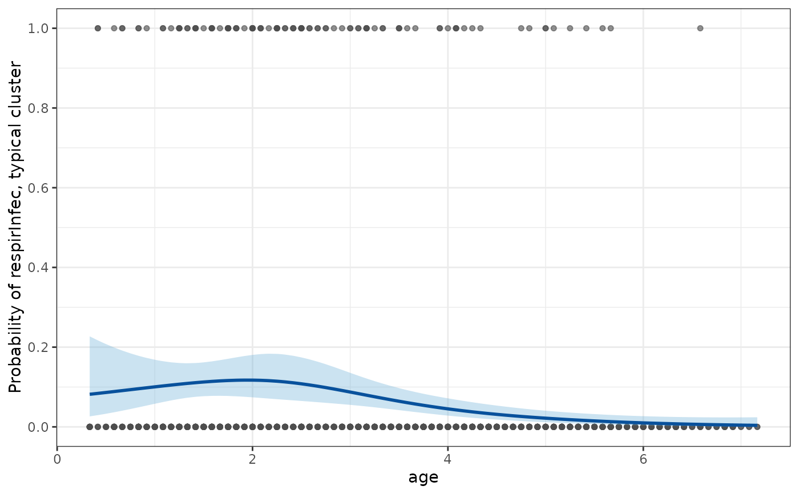

Fit a semiparametric (additive mixed) model with glmmTMB: smooth terms written in the formula, as in mgcv::gam, are fitted as random effects, next to glmmTMB's families (e.g. negative binomial), zero inflation, dispersion models and covariance structures. smZ()/smoothZ of 1.x are superseded (removed in 2.0); see vignette("migrating").
Usage
semireg_tmb(formula, data, family = gaussian(), ziformula = ~0,
dispformula = ~1, weights = NULL, offset = NULL, contrasts = NULL, na.action,
se = TRUE, verbose = FALSE, doFit = TRUE, control = glmmTMBControl(),
REML = TRUE, start = NULL, map = NULL, sparseX = NULL, ...)Arguments
- formula
A two-sided linear formula object describing both the fixed-effects and random-effects part of the model, with the response on the left of a ~ operator and the terms, separated by + operators, on the right. Random-effects terms are distinguished by vertical bars ("|") separating expressions for design matrices from grouping factors.
- data
data frame (tibbles are OK) containing model variables. Not required, but strongly recommended; if
datais not specified, downstream methods such as prediction with new data (predict(fitted_model, newdata = ...)) will fail. If it is necessary to callglmmTMBwith model variables taken from the environment rather than from a data frame, specifyingdata=NULLwill suppress the warning message.- family
a family function, a character string naming a family function, or the result of a call to a family function (variance/link function) information. See
familyfor a generic discussion of families orfamily_glmmTMBfor details ofglmmTMB-specific families.- ziformula
a one-sided (i.e., no response variable) formula for zero-inflation combining fixed and random effects: the default
~0specifies no zero-inflation. Specifying~.sets the zero-inflation formula identical to the right-hand side offormula(i.e., the conditional effects formula); terms can also be added or subtracted. When using~.as the zero-inflation formula in models where the conditional effects formula contains an offset term, the offset term will automatically be dropped. The zero-inflation model uses a logit link.- dispformula
a one-sided formula for dispersion containing only fixed effects: the default
~1specifies the standard dispersion given any family. The argument is ignored for families that do not have a dispersion parameter. For an explanation of the dispersion parameter for each family, seesigma. The dispersion model uses a log link. In Gaussian mixed models,dispformula=~0fixes the residual variance to be 0 (actually a small non-zero value), forcing variance into the random effects. The precise value can be controlled viacontrol=glmmTMBControl(zero_dispval=...); the default value issqrt(.Machine$double.eps).- weights
weights, as in
glm. Not automatically scaled to have sum 1.- offset
offset for conditional model (only).
- contrasts
an optional list, e.g.,
list(fac1="contr.sum"). See thecontrasts.argofmodel.matrix.default.- na.action
a function that specifies how to handle observations containing
NAs. The default action (na.omit, inherited from the 'factory fresh' value ofgetOption("na.action")) strips any observations with any missing values in any variables. Usingna.action = na.excludewill similarly drop observations with missing values while fitting the model, but will fill inNAvalues for the predicted and residual values for cases that were excluded during the fitting process because of missingness.- se
whether to return standard errors.
- verbose
whether progress indication should be printed to the console.
- doFit
whether to fit the full model, or (if FALSE) return the preprocessed data and parameter objects, without fitting the model.
- control
control parameters, see
glmmTMBControl.- REML
whether to use REML estimation rather than maximum likelihood. Gaussian fits use REML by default; for other families the default is maximum likelihood (Laplace), as
glmer, unlessREML = TRUEis given. (Before 2.0 the default never reached glmmTMB, so gaussian fits were maximum likelihood.)- start
starting values, expressed as a list with possible components
beta,betazi,betad(fixed-effect parameters for conditional, zero-inflation, dispersion models);b,bzi(conditional modes for conditional and zero-inflation models);theta,thetazi(random-effect parameters, on the standard deviation/Cholesky scale, for conditional and z-i models);psi(extra family parameters, e.g., shape for Tweedie models).- map
a list specifying which parameter values should be fixed to a constant value rather than estimated.
mapshould be a named list containing factors corresponding to a subset of the internal parameter names (seestartparameter). Distinct factor values are fitted as separate parameter values,NAvalues are held fixed: e.g.,map=list(beta=factor(c(1,2,3,NA)))would fit the first three fixed-effect parameters of the conditional model and fix the fourth parameter to its starting value. In general, users will probably want to usestartto specify non-default starting values for fixed parameters. SeeMakeADFunfor more details.- sparseX
a named logical vector containing (possibly) elements named "cond", "zi", "disp" to indicate whether fixed-effect model matrices for particular model components should be generated as sparse matrices, e.g.
c(cond=TRUE). Default is allFALSE- ...
Not used: arguments removed in 2.0 (
smoothZ,prt,predict_info) stop with their 2.0 spelling; nothing is printed during the fit (print(fit$semer)).
Value
A list of class semireg, as for semireg: print() shows the formula, the smooth terms
(with the smooth, term and covariate values that semipred takes for
sm_term and covariate), the fixed effects, other variance components and any advice;
summary(), tidy() and the extractors (coef(), vcov(), VarCorr(), ...) are those
described there. Notes on the fit are in attr(, "advice") (advice). Its elements:
- semer
The fitted
glmmTMBmodel.- call
The call of
semireg_tmb().- data
A data.frame with generated variables in the fitting.
- fomul_vars
Name of variables in the formula of semireg_tmb model.
- sm_vars
Names of the variables of the smooths.
- cov_lst
Covariance matrix list for each smooth term.
- u_lst
Random effects list for each smooth term.
- CovMat
Covariance matrix for all smooth terms.
- Cov_ind
Covariance matrix index for each smooth term.
- Cov_indN
Covariance matrix index for each smooth term of several blocks (e.g.
s(x, by = f)).- df
Degree of freedom of all random terms.
- tmbf
The glmmTMB model result using doFit=FALSE.
Details
A semiparametric model is fitted as a linear (or generalized linear) mixed model whose random effects are the penalised parts of smooth functions of covariates (Wand and Ormerod, 2008); each smooth's variance is its smoothing parameter, estimated by (RE)ML.
Correlation structures
glmmTMB's covariance structures can be written next to the smooths and are kept as written: ar1(),
ou() (unequally spaced times, with glmmTMB::numFactor()), cs(), toep(),
diag(), and the spatial exp(), gau(), mat(). Residuals correlated in time within
subjects are written as ar1(time_factor + 0 | subject) with dispformula = ~0 (the structure is
then the residual covariance; with a residual variance as well it is AR1 plus a nugget, and cs() plus a
residual variance is not identified), e.g.
semireg_tmb(y ~ s(time, by = trt) + ar1(tf + 0 | id), dispformula = ~0, data = d). semireg()
(lme4) has no such structures and refuses them.
Smooth terms in the formula
Smooths can be written in the model formula, as for mgcv::gam, next to fixed and lme4 random terms:
y ~ A + s(x, by = A) + (1 | Block). Each smooth is set up by mgcv (bases, knots, identifiability
constraints) and split, as in gamm4, into an unpenalised part, which is added to the fixed effects as
ordinary terms, and penalised parts, each a block of random effects with one variance. The fixed terms are
added automatically (terms already written are not doubled), so a smooth by a factor cannot lose its group
slopes:
| Written | Meaning | Fixed terms added |
s(x), s(x, bs = "cr", k = 12) | one curve | x |
s(x, by = f) | a curve per level of f, a variance each (id = 1: one shared) | f + f:x |
s(x, by = z), z numeric | varying coefficient \(f(x) z\) | z + z:x |
s(x, f, bs = "fs") | random curves per level, one variance | none |
s(x1, x2) | isotropic surface (thin plate) | x1 + x2 |
s(x, bs = "os", k = 10) | O'Sullivan spline with k interior knots (1.x smZ(x, k = 10)) | x |
s(x1, x2, bs = "ztps", k = 6) | low-rank thin plate with k knots (1.x smZ(cbind(x1, x2), type = "Ztps", k = 6)) | x1 + x2 |
s(x, bs = "user", xt = list(basis = f)) | a basis of your own (see semireg) | x |
t2(x1, x2) | tensor-product surface, a variance per penalty | x1 + x2 + x1:x2 |
s(x, bs = "cs"), "ts" | shrinkage smooths (no unpenalised part) | none |
s(x, f) | common curve + a deviation curve per level of f, one variance for the deviations | x + f + f:x |
s(x, f1:f2) | the same with the cells of f1:f2 | x + f1:f2 + f1:f2:x |
s(x, f1*f2) | common curve + deviation curves for f1, f2 and f1:f2, a variance each | x + f1*f2 + f1:x + f2:x + f1:f2:x |
s(x1, x2, f) | common surface + a deviation surface per level | x1 + x2 + f + f:x1 + f:x2 |
A factor term among the arguments of s() gives this ANOVA-like split (not an mgcv form): the deviation
curves of a factor term are random effects with one variance, so varcomp() shows how much the curves differ
by f1, by f2 and by their interaction, and a variance of zero means the curves of that term have the
same shape (their levels still differ by the fixed terms). The pieces are set up without constraints between them:
the mixed model separates them by their variances, as nested random effects. Each level's curve is the fixed part
plus the common curve plus its deviations.
The fits equal gam(..., method = "REML") for gaussian models (with s(g, bs = "re") for a random
intercept), and semipred() and predictmeans() give the curves, means and their standard errors of
predict.gam(). The variables are used as they are (not centred or scaled). Tensor products: t2(x1, x2), as in semireg
(te() is fitted as t2(); ti() is not available).
Zero inflation (glmmTMB)
For a glmmTMB fit with zero inflation (ziformula) the means are those of the conditional (count)
part, \(\mu\), as emmeans and predict(type = "conditional") give, not the overall mean
\((1 - \pi)\mu\) (\(\pi\) the probability of an extra zero); ratios are of these means, and equal the
ratios of overall means only when \(\pi\) is the same. A message says so and settings$component is
"conditional". The two can order treatments differently when \(\pi\) differs between them.
mean_type = "overall" (predictmeans(), covariatemeans(), semipred()) gives the overall
means and their ratios.
References
Wand, M.P. and Ormerod, J.T. (2008). On semiparametric regression with O'Sullivan penalized splines. Australian and New Zealand Journal of Statistics. 50, 179-198.
Examples
library(predictmeans)
## Counts with extra zeros: curves of two treatments, a random site effect, a negative
## binomial with zero inflation; the rate ratio of the curves along x and where it differs
## from 1
set.seed(5)
cn <- expand.grid(x = seq(0, 3, length = 30), trt = factor(c("ctl", "trt")), site = factor(1:8))
cn$y <- rnbinom(nrow(cn), size = 3,
mu = exp(1 + sin(cn$x) + (cn$trt == "trt")*0.5*cn$x + rnorm(8, 0, 0.3)[cn$site]))
cn$y[runif(nrow(cn)) < 0.1] <- 0
fc <- semireg_tmb(y ~ s(x, by = trt, bs = "os", k = 6) + (1 | site), ziformula = ~ 1,
family = glmmTMB::nbinom2, data = cn)
rr <- semipred(fc, "trt", "x", contr = c("trt", "ctl"), band = "simultaneous")
#> The model has zero inflation (ziformula ~1): the means are those of the conditional (count) part, mu, as emmeans and predict(type = "conditional") give; the overall mean is (1 - pi) mu, with pi the probability of an extra zero. Ratios are of these means (the same for overall means only when pi is the same). mean_type = "overall" gives the overall means.
attr(rr$pred_df, "significant")
#> from to direction
#> 1 0.7241379 3 >
predictmeans(fc, "trt", covariate = c(x = 1.5))$means
#> The model has zero inflation (ziformula ~1): the means are those of the conditional (count) part, mu, as emmeans and predict(type = "conditional") give; the overall mean is (1 - pi) mu, with pi the probability of an extra zero. Ratios are of these means (the same for overall means only when pi is the same).
#> trt estimate std.error df conf.low conf.high response response.std.error
#> 1 ctl 1.842115 0.1565336 469 1.534521 2.149709 6.309871 0.987707
#> 2 trt 2.852923 0.1517429 469 2.554743 3.151103 17.338385 2.630977
#> response.conf.low response.conf.high group
#> 1 4.639104 8.582363 A
#> 2 12.867989 23.361818 B
# \donttest{
## Repeated measures: curves over time, AR(1) correlation within subjects (the residual
## covariance, dispformula = ~0); means at a time with Satterthwaite df
set.seed(7)
d <- expand.grid(t = 1:8, id = factor(1:12))
d$A <- factor(rep(c("a1", "a2", "a3"), each = 32))
d$y <- sin(d$t/3) + rnorm(12, 0, 0.4)[d$id] +
unlist(lapply(1:12, function(i) as.numeric(stats::arima.sim(list(ar = 0.6), 8, sd = 0.4))))
d$tf <- factor(d$t)
fa <- semireg_tmb(y ~ s(t, by = A, bs = "os", k = 4) + (1 | id) + ar1(tf + 0 | id),
dispformula = ~0, data = d)
predictmeans(fa, "A", covariate = c(t = 4), pairwise = TRUE)$pairs
#> level1 level2 estimate std.error df statistic p.value p.adj
#> 1 a1 a2 0.2777639 0.4349906 13.49640 0.6385516 0.5338012 0.5338012
#> 2 a1 a3 -0.1610702 0.4431463 14.19657 -0.3634695 0.7216096 0.7216096
#> 3 a2 a3 -0.4388341 0.4381514 14.09415 -1.0015583 0.3334431 0.3334431
#> conf.low conf.high lsd p.method
#> 1 -0.6584747 1.2140026 0.9362386 t
#> 2 -1.1102914 0.7881510 0.9492212 t
#> 3 -1.3779868 0.5003185 0.9391526 t
varcomp(fa)
#> vcov SE 2.5 % 97.5 %
#> id.(Intercept) 0.0737 0.2157 0.0079 7.077491e+11
#> id.1.var 0.3662 0.2435 0.1376 2.521000e+00
#> cor.id.1 0.7865 0.1441 0.3112 9.470000e-01
#> s_t_Aa1.(Intercept) 0.0244 0.0257 0.0063 1.373100e+00
#> s_t_Aa2.(Intercept) 0.0116 0.0160 0.0024 8.644800e+00
#> s_t_Aa3.(Intercept) 0.0425 0.0452 0.0109 2.558500e+00
#> residual 0.0000 NA 0.0000 NA
## Binary responses with a random intercept per child (HRW::indonRespir)
if (requireNamespace("HRW", quietly = TRUE)) {
data(indonRespir, package = "HRW")
fb <- semireg_tmb(respirInfec ~ s(age, bs = "os", k = 10) + vitAdefic + female + height +
stunted + visit2 + visit3 + visit4 + visit5 + visit6 + (1 | idnum),
family = binomial, data = indonRespir)
semipred(fb, "age", "age")$plt
}

# }